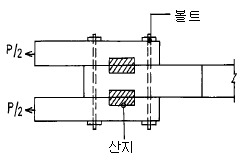
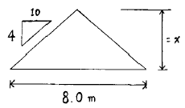
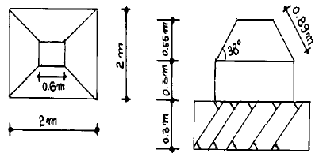
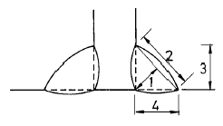
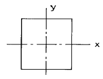
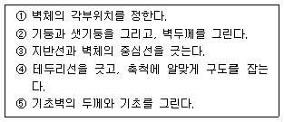
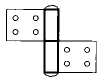

건축목재시공기능장 (2002-07-21 기출문제)
1과목: 임의 구분
1. 설계도면의 종류 및 표시법 설명 중 잘못된 것은?
- 척도에는 축척, 실척, 배척이 있다.
- 치수의 단위는 mm로 사용하나, 단위기호는 기입하지 않는 것이 통칙이다.
- 도면의 분류에서 견적도는 내용에 따른 분류에 속한다.
- 실선(외형선)은 물체의 겉 모양을 표시하는 선이다.
(정답률: 알수없음)

2. 라아멘 구조의 철근 콘크리트보에 대한 설명이다. 틀린 것은?
- 콘크리트는 인장력에 약하므로, 인장력이 일어나는 곳에는 반드시 철근을 배치한다.
- 하중이 아래쪽으로 작용하는 경우에 휨모우먼트에 의해 보의 중앙은 아래쪽에, 양단부에는 위쪽에 인장력이 일어난다.
- 철근의 이음위치는 인장력이 작게 작용하는 곳이나 압축력이 작용하는 곳이 되도록 한다.
- 굽힌철근(bent up bar)은 중앙부 윗쪽의 철근을 반곡점 부근에서 아래쪽으로 휘어 배근한다.
(정답률: 알수없음)
3. 그림과 같은 목조 접합의 산지는 어느힘에 저항하는가?

- 인장력
- 압축력
- 전단력
- 휨응력
(정답률: 알수없음)
4. 평균 근로자수가 1,000명이 있는 직장에서 1년 동안에 5명의 재해를 냈을 때 천인율은?
- 0.5
- 5
- 50
- 500
(정답률: 알수없음)
5. 간사이가 8m이고 물매가 4㎝일때 물매에 의한 대공 길이는 얼마가 적당한가?

- 1.6m
- 1.8m
- 3.2m
- 3.6m
(정답률: 알수없음)
6. 병원의 일광욕실에 사용하는 유리로 옳은 것은?
- 프리즘 유리
- 열선 흡수유리
- 자외선 투과유리
- 스테인드 글라스
(정답률: 알수없음)
7. 공사 시공방식 중 공동도급에 관한 설명중 적당하지 않은 것은?
- 공사도급의 경쟁완화 수단이 된다.
- 단독회사의 도급보다 경비가 적게 든다.
- 기술, 자본 및 위험의 부담이 감소된다.
- 신용도가 증대된다.
(정답률: 알수없음)
8. 왕대공 지붕틀 제작시 평보와 왕대공에 쓰이는 철물로 적당한 것은?
- 보울트
- 띠쇠
- 안장쇠
- 감잡이쇠
(정답률: 알수없음)
9. 45°로 금을 그을 때 또는 45°로 톱질할 때 안내자로써 사용하는 것은?
- 그무개
- 연귀자
- 곱자
- 하단자
(정답률: 알수없음)
10. 로울러의 회전에 의하여 부재를 자동으로 이송하면서 두께를 맞추어 깍는 목공기계인 자동대패의 크기는 어느것으로 표현하는가?
- 최대절삭나비 × 높이
- 회전날의 길이
- 최대절삭 나비
- 최대절삭 높이
(정답률: 알수없음)
11. 콘크리트 공사의 거푸집 존치기간으로 가장 길게 하여야 하는 것은?
- 기초 밑면
- 보 옆면
- 기둥 옆면
- 바닥판 밑면
(정답률: 알수없음)
12. 무량판구조로 되어 있는 거푸집은?
- 슬라이딩폼
- 메탈폼
- 워플거푸집
- 알루미늄 거푸집
(정답률: 알수없음)
13. 그림과 같은 기초 거푸집 면적으로 옳은 것은?

- 2m2
- 3.6m2
- 6.5m2
- 7.1m2
(정답률: 알수없음)
14. 인간과 기계의 기능을 비교할때 인간이 기계를 능가하는 기능은?
- 반복작업을 신속하게 처리한다.
- 원칙을 적용하여 여러가지 문제를 해결한다.
- 정보를 신속하게 또 많은 양을 보관한다.
- 위험한 환경에서도 효율적으로 임무를 수행한다.
(정답률: 알수없음)
15. 건설공사의 안전작업에 대한 설명으로 옳지 않은 것은?
- 가설공사는 건설공사중 가장 안전을 도모해야 할 공사이다.
- 기초공사시 인근지반의 안전에 대해서 점검한다.
- 철근가공시 해머 사용의 안전에 주의해야 한다.
- 철골조립 및 용접은 기계를 이용하므로 시간절약을 위하여 다른 작업과 병행한다.
(정답률: 알수없음)
16. 조적식 구조에서 내력벽의 두께를 결정하는데 별로 관계가 없는 것은?
- 건축물의 층수
- 건축물의 높이
- 벽돌의 쌓기방법
- 벽의 길이
(정답률: 알수없음)
17. 철골공사의 용접용어와 관계가 없는 것은?
- weeping
- under cut
- reamer
- over lap
(정답률: 알수없음)
18. 콘크리트의 혼화제 사용목적에 맞지 않는 것은?
- 발포제는 경량콘크리트에 사용한다.
- 플라이 애쉬는 시공연도를 증가시킨다.
- 규조백토는 수밀성을 증가시킨다.
- 염화칼슘은 시공연도를 증가시킨다.
(정답률: 알수없음)
19. 아스팔트중 가장 신축이 크며 최우량품인 것은?
- 스트레이트 아스팔트
- 블로운 아스팔트
- 아스팔트 프라이머
- 아스팔트 콤파운드
(정답률: 알수없음)
20. 목구조용 철물 중 볼트와 듀벨을 동시에 사용할 경우 볼트는 어떤응력에 작용시키는 철물인가?
- 휨모멘트
- 전단력
- 인장력
- 부착력
(정답률: 알수없음)
2과목: 임의 구분
21. 다음 중 집성목재의 용도로 맞는 것은?
- 음악감상실, 방송실 등의 천정 또는 안벽의 흡음판
- 집회장, 강당, 극장 등의 천정 또는 내벽에 붙여 음향 조절효과
- 보, 기둥, 아치, 트러스 등의 구조재료는 물론 계단, 디딤판, 노출된 서까래 등의 장식용
- 상판, 간막이, 가구 등에 이용
(정답률: 알수없음)
22. 구멍파기 끌의 끊는 날의 각도로 옳은 것은?
- 5 ∼ 10°
- 10 ∼ 20°
- 20 ∼ 30°
- 30 ∼ 45°
(정답률: 알수없음)
23. 스팬(span)이 큰 보 및 바닥판의 거푸집은 중앙에서 스팬(span)의 얼마 정도로 치켜올려야 되나?
- 1/100 - 1/200
- 1/200 - 1/300
- 1/300 - 1/500
- 1/500 - 1/700
(정답률: 알수없음)
24. 양판문의 기술 중 옳지 않은 것은?
- 밑막이는 선대에 두쌍장부로 맞춤한다.
- 양판은 문 울거미에 홈을 파 끼운다.
- 중간막이는 선대에 쌍장부로 하여도 좋다.
- 중간선대는 밑막이대에 내다지장부로 맞춤한다.
(정답률: 알수없음)
25. 사업장에서 발생되는 안전사고의 발생빈도를 표시하는 도수율(빈도율)은?
- 사고건수/노동 총시간
- 사고건수/노동 총시간 × 100만
- 사고건수/노동 총인원
- 사고건수/노동 총인원 × 100만
(정답률: 알수없음)
26. 안전에 대한 색채규정 중 지시표시용으로 사용되는 색채는?
- 황색
- 녹색
- 흑백색
- 청색
(정답률: 알수없음)
27. 도면의 표기방법 중 절단선, 기준선 등에 사용하는 선은?
- 일점쇄선
- 이점쇄선
- 실선
- 점선
(정답률: 알수없음)
28. 아래 그림은 용접부분의 형상을 나타낸 그림이다. 용접부분의 목두께의 치수를 나타내는 것으로 옳은 것은?

- 1
- 2
- 3
- 4
(정답률: 알수없음)
29. 4변이 모두 고정되어 있는 바닥 슬랩에서 철근이 가장 많이 배근되어야 하는 곳은?

- x방향의 단부
- x방향의 중앙부
- y방향의 단부
- y방향의 중앙부
(정답률: 알수없음)
30. 쌍턱장부는 주로 어느 부위에서 많이 사용되는 맞춤인가?
- 토대의 모서리
- 창호문틀
- 기둥의 상단부
- 보와 보의 연결
(정답률: 알수없음)
31. 연강판에 일정한 간격으로 그물눈을 내고, 철망 모양으로 만든것으로 천장, 벽 등의 모르타르바름 바탕용으로 쓰이는 것은?
- 메탈라스
- 와이어메시
- 와이어라스
- 익스팬디드 메탈
(정답률: 알수없음)
32. 다음 재료 중 열경화성 수지인 것은?
- 폴리에테르 수지
- 폴리스틸렌 수지
- 폴리에틸렌 수지
- 염화비닐 수지
(정답률: 알수없음)
33. 네트워크 공정표(net work progress chart)에 관한 기술 중 잘못된 것은?
- 개개의 작업관련이 알기쉽다.
- 공정관리가 편리하다.
- 작성자 이외에도 이해하기 쉽다.
- 실제공사도 네트워크와 같이 구분 이행하므로 진척관리를 하지 않아도 된다.
(정답률: 알수없음)
34. 도급자에 관한 기술 중 틀린 것은?
- 원도급자란 건축주와 직접 도급계약을 한 시공업자이다.
- 재도급이란 부분적으로 분할하여 도급을 주어 시행하는 도급자를 말한다.
- 하도급이란 공사를 직능별 도급업자에게 도급을 주어시행하는 제도이다.
- 건설업이란 건설공사를 완성하고 그 대가를 받는 영업을 말한다.
(정답률: 알수없음)
35. 일식도급 계약제도의 장점이 아닌 것은?
- 계약과 공사감독이 비교적 간단하고 건축주의 업무가 용이하다.
- 공사 전체의 통제가 용이하고 원활하며 능률이 좋다.
- 분할도급에 비하여 우량시공이 된다.
- 재료,노무,현장시공,업무 일체를 일괄하여 시공할 수 있다.
(정답률: 알수없음)
36. 목재의 수축감소(함수율 30° /wt에서 20° /wt 건조할 때)는?
- 2%
- 3%
- 4%
- 5%
(정답률: 알수없음)
37. 그므개의 종류가 아닌 것은?
- 평행 그므개
- 장부 그므개
- 쪼개기 그므개
- 줄 그므개
(정답률: 알수없음)
38. 기초윗면과 토대 밑면의 접촉부분을 1 ∼ 3㎝ 간격을 두는데 그 이유는 무엇인가?
- 방습상 유효
- 구조상 유효
- 내력상 유효
- 미장상 유효
(정답률: 알수없음)
39. 목구조 트러스식 조립보에서 어떤 부재에 철근을 사용하는가?
- 압축력을 받는 부재
- 인장력을 받는 부재
- 휨모우먼트를 받는 부재
- 전단력을 받는 부재
(정답률: 알수없음)
40. 거푸집 설계시 바닥판 거푸집의 계산에서 고려하지 않아도 되는 것은?
- 생콘크리트의 중량
- 작업하중
- 충격하중
- 생콘크리트의 측압력
(정답률: 알수없음)
3과목: 임의 구분
41. 다음중 목공사비에 포함되지 않는 것은?
- 목수품
- 못, 철물비
- 비계비
- 기계기구손료비
(정답률: 알수없음)
42. 화재의 종류중 소화시 물을 사용하면 오히려 화재를 확대시키는 결과를 가져오게 되는 것은?
- A급 화재
- B급 화재
- C급 화재
- D급 화재
(정답률: 알수없음)
43. 안전한 작업형성에 가장 중요한 요인은?
- 환경조성
- 강압적인 지시
- 성실한 자세
- 조심스러운 태도
(정답률: 알수없음)
44. 나무구조 벽체 그리기 순서가 올바르게 된 것은?

- ④ → ③ → ① → ⑤ → ②
- ⑤ → ② → ④ → ③ → ①
- ③ → ① → ④ → ⑤ → ②
- ① → ② → ③ → ④ → ⑤
(정답률: 알수없음)
45. 다음 그림 경첩의 명칭은?

- 기경첩
- 병원경첩
- 숨은 경첩
- 양쪽자유경첩
(정답률: 알수없음)
46. 목재의 강도가 바르게 나열된 것은?
- 휨파괴 계수 > 섬유방향 인장강도 > 섬유방향 압축강도 > 섬유 직각방향의 압축강도
- 섬유방향 압축강도 > 섬유 직각방향의 압축강도 > 휨파괴 계수 > 섬유방향 인장강도
- 섬유방향 인장강도 > 휨파괴 계수 > 섬유방향 압축강도 > 섬유 직각방향의 압축강도
- 섬유 직각방향의 압축강도 > 섬유방향 인장강도 > 휨파괴 계수 > 섬유방향 압축강도
(정답률: 알수없음)
47. 거푸집제거시 주의사항에 대한 설명으로 옳지 않은 것은?
- 거푸집 해체시 건물에 충격을 주지 않도록 한다.
- 거푸집은 담당원의 승인을 받고 재사용이 가능하도록 해체하여야 한다.
- 지주를 바꾸어 세우는 동안 상부의 작업은 제한한다.
- 소형판넬거푸집의 해체는 빔을 먼저하고 판넬을 나중에 하는 것이 안전하다.
(정답률: 알수없음)
48. 하인리히 안전의 3요소와 관련이 없는 것은?
- 인간요소
- 관리요소
- 기술요소
- 교육요소
(정답률: 알수없음)
49. 다음 중 철골구조에 적당한 기초는?
- 줄기초
- 온통기초
- 복합기초
- 독립기초
(정답률: 알수없음)
50. 연약점토의 점착력을 판정하기 위한 지반조사 방법으로 옳은 것은?
- 표준관입시험
- 베인테스트
- 샘플링
- 스웨덴테스트
(정답률: 알수없음)
51. 목조계단에 대한 설명 중 옳지 않은 것은?
- 계단의 기울기는 단 너비와 단 높이의 비로 정해진다.
- 일정한 높이마다 계단참을 두어 편안하게 통행할 수 있게 한다.
- 계단의 옆에 벽이 없을 때에는 난간을 설치한다.
- 난간에서 손스침을 위한 빗재를 난간동자, 난간동자를 지탱하는 짧은 기둥을 난간두겁이라 한다.
(정답률: 알수없음)
52. 기둥, 벽 등의 모서리에 대어 미장바름을 보호하는 철물은?
- 코너비드(corner bead)
- 미끄럼막이(non slip)
- 인서트(insert)
- 줄눈대(joiner)
(정답률: 알수없음)
53. 기둥과 벽의 거푸집에 대한 생콘크리트의 측압에 대한 기술로 옳은 것은?
- 슬럼프 값이 클수록 측압이 크다.
- 온도가 높을수록 측압은 커진다.
- 벽두께가 얇을수록 측압은 커진다.
- 부어넣기 속도가 빠를수록 측압은 작아진다.
(정답률: 알수없음)
54. 대팻날의 귀를 접는 이유는?
- 거스러미가 생기지 않게하기 위하여
- 대팻날을 쉽게 빼기 위하여
- 대팻밥이 끼지 않도록 하기 위하여
- 두껍게 깎이는 것을 방지하기 위하여
(정답률: 알수없음)
55. 옻칠에 대하여 설명이 맞지 않는 것은?
- 내산, 내구적이다.
- 수밀성과 내열성이 우수하다.
- 전기, 절연성이 우수하다.
- 외부에서 햇빛에 광택을 잃지 않는다.
(정답률: 알수없음)
56. 되물매에 관한 설명으로 옳은 것은?
- 고의 길이가 구의 길이보다 길 때
- 고의 길이가 구의 길이보다 짧을 때
- 고의 길이와 구의 길이가 같을 때
- 고의 길이가 구의 길이보다 절반 이하일 때
(정답률: 알수없음)
57. 우리나라 전통 건축양식에서 기둥 위에만 공포를 배치하는 건축양식은?
- 주심포식
- 익공식
- 다포식
- 혼합절충식
(정답률: 알수없음)
58. 목조 지붕틀에서 사용되지 않는 보강 철물은?
- 감잡이쇠
- 띠쇠
- 주걱보울트
- 앵커보울트
(정답률: 알수없음)
59. 내구, 내화, 내진상 우수하나 공사 기간이 긴 구조는?
- 나무구조
- 벽돌구조
- 철근콘크리트 구조
- 철골구조
(정답률: 알수없음)
60. 압축재로 왕대공과 평보에 빗턱장부 맞춤하는 부재는?
- ㅅ자보
- 빗대공
- 달대공
- 귀잡이보
(정답률: 알수없음)